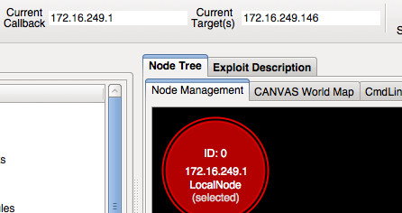
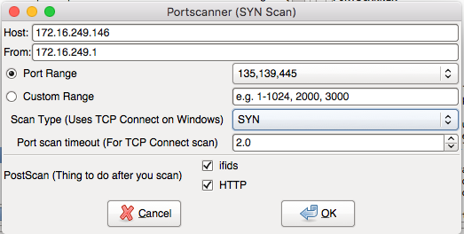
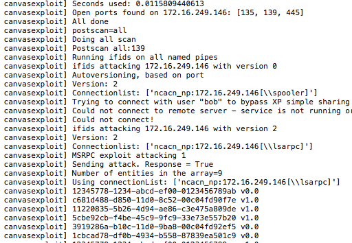
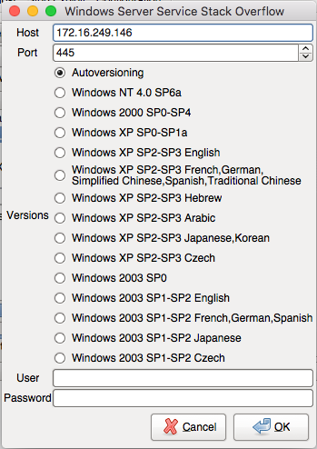

Exploiting Windows Remotely¶
Suppose we are in a network and our goal is to scan, identify and exploit some Windows machines, remotely. There are many different modules targeting Windows machines available in Canvas, aimed at different versions of Windows. Of course it very rare to find a Windows machine exposed over the Internet that is vulnerable to some old known RPC vulnerablitie, but auditing and penetration testing internal networks is a different story. It is likely that in larger networks you discover systems vulnerable to issues from a few years back.
In this example scenario, we will be using the exploit module for Windows Server Service (MS08-67) against a Windows 2003 Server virtual machine. While it is a rather old and outdated OS, it servers the purpose of demonstration well.
Select The Target Host¶
Once the VM is up and running, we obtain the IP address of the server, and add it to Canvas as a new host using Target Host button in the GUI. This will also make it our default target automatically. Depending on your environment and VM networking configurations, you might need to select the right network interface in Canvas, as the call-back interface. If the VM is configured to use NAT network connectivity, you should also select the relevant virtual interface in Canvas.
In this example our Windows VM is running with the IP address 172.16.249.146. So By right-clicking on the LocalNode in the Node Management tab, we select the right interface, which would be 172.16.249.1.
Scan The Target Host¶
Once we add the target to our Canvas knowledge, we want to know what ports are open on it, and what services are running behind them. While most people would prefer to use tools such as Nmap for this purpose, and we do recommend that as well, there is a port-scan module provided in Canvas that can identify open ports using different port scanning techniques (SYN, FIN, XMAS, NULL). This module is also capable of fingerprinting the web server if any HTTP service is found, as well as performing an extensive DCE-RPC fingerprinting, which is basically done by running ifids module automatically in the background, against any open RPC ports on Windows.
You can monitor the progress of the module execution in the Current Status tab in the GUI. Results of the module will be printed in the Canvas Log tab. You will get results similar to this:
While the main goal of this module is to identify open ports, scanning and fingerprinting RPC can be a very useful and effective way to fingerprinting the remote Windows system.
Tip
It is important to select ‘ifids’ DCE-RPC enumeration module on all open RPC ports. Different software and services bind to different ports, so enumeration will get different results from each port. Enumerated ids can be reliably linked to specific services or software running on the machine. An easy way to identify unknown ids is to simply search them in Google! For example there are certain ifids exposed, only of the machine is a domain controller, the ifids c6c94c23-538f-4ac5-b34a-00e76ae7c67a represents Avast Anti-virus RPC server.
We can also use the osdetect module in Canvas, which uses a combination of methods to reliably detect the version of remote system. In case of Windows, based results from identified web server and open shares via SMB service, the module identifies the version. In this case the version is correctly identified as Windows 2003 SP1.
Exploit The Target Host¶
Now that we have confirmed the availability of some services, as well as exact version of Windows, we can proceed with using an exploit against it.
By either using the search feature in the GUI, or browsing through list of modules select the ms08_067 module. It is located in Exploits > Remote > Windows > Windows
2003 > ms08_067. After running the module, a window showing options available for this specific module will be shown. Options are module specific and are other modules might have different options and requirements to specify before launching the exploit. Note that the value for the ‘Host’ is not editable at this window and Canvas will not use the new IP address you change it here.

When possible, Canvas takes care of version detection automatically so there is no need to worry about which version of payload to select unless you are already certain about it. In this case we leave the option Autoversioning as selected.
By confirming the settings we proceed with exploitation. You will start seeing a Log of actions Canvas is performing in te Canvas Log tab, to prepare the payload, send the exploit and wait for the call-back connection from MOSDEF. Once exploitation process is finished, you will see a ‘Listener-shell’ window pop up, which allow us interact with the exploited machine to perform actions such as running commands or upload/download files.

Each successfully exploited host, appears as a new circle in the Node Tree tab. From this tab, you can perform actions against the new node, such as selecting them as the Current target, using their network interfaces as your Callback interface, or if you have more than one node, select a group of them to run a module against all of them at the same time.
Tip
You can use +/- keys to zoom in or out in the Node Tree, or use the Delete key to delete selected node. Deleting a node will also remove all of its child nodes and you will loose access to that node. Pressing “L” will pop up a new Listener window linked to the currently selected host.
Tip
Pay attention to each exploit’s description provided in the GUI. There is a section titled REPEATABILITY which notes whether you can re-use the same exploit against the same machine multiple times, without requiring a restart of service or OS. When repeatablity is listed as infinity, it means you can exploit the target multiple times. Some exploits might list Single-Shot in this section. This means you only have once chance to exploit the remote service. Even if the exploit succeeds, you will not be able to exploit the same machine again, until it is restarted. Not all memory corruption vulnerabilities can be exploited with very high reliability.